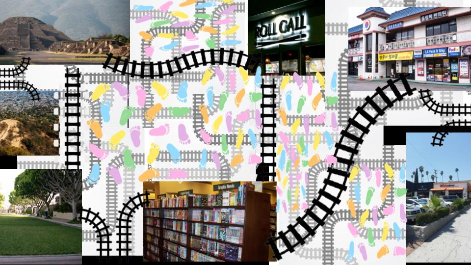

next

- 1. The picture on the left top corner is the one of pyramids in Mexico, I came here with two of my cousins and my grandma. We had such a great time here we made it all the way to the top and I felt so proud of myself because I had accomplished something big with my family.
- 2. The picture on the middle left side is a little hike site. I love having mini hikes in the morning they wake me up with a good feeling and watching the sun rise is worth the mini hike.
- 3. The picture on the low left corner is a mini part of a campus i like to hang out before going back home, I rest there by reading, listening to music, or to eat.
- 4. The middle top picture is where i go all the time when i have cash for food. I would go here with a friend sometimes just to enjoy the long day of school.
- 5. The bottom middle picture is a book store called Barns and nobles i like going there to read some manga and like it a lot as some are based of some of my favorite anime.
- 6. The top right picture is to represent the type of stores i go to and get my usual grub. I feel comfortable when going to the stores because of how often i go to them.
- 7.The bottom right picture is a boba time thats about 3 blocks from my school. I added this because its where a lot of students from my school go including me to. Its a spot to chill and hang with friends and I liked going there with a friend.